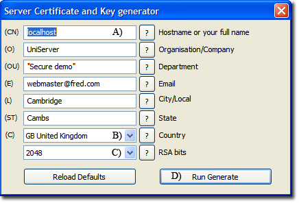

|
|
OpenCart |
OpenCart is a free and open source shopping cart application providing an online e-commerce solution. The following page provides detailed information for installing OpenCart on Uniform Server XIV and how to run it with SSL. Also covered is portability, allowing OpenCart to run from a USB memory stick or another location.
The following guide assumes you are installing OpenCart in a sub-folder named shop.
This is accessible using http://your.domain.com/shop/
For example test server, use http://localhost/shop/
Running third party scripts such as OpenCart requires Uniform Server's SSL default behavior to be modified. This is covered in section SSL secure main server.
Note: At step D, you are required to enter your e-mail address. This is the e-mail address you set as default when configuring MSMTP. For details, see Edit MSMTP Configuration.
SSL secure main server
A default installation of Uniform Server contains a separate folder (ssl) preconfigured specifically for a personal secure server. To run third party scripts such as OpenCart requires this default behavior to be modified such that SSL secures only the main server.
The Apache SSL configuration must be modified to secure only the main server as follows:
- Edit file UniServerZ\core\apache2\conf\extra\httpd-ssl.conf
- Locate two instances of ${US_ROOTF_SSL} and replace with ${US_ROOTF_WWW}
Note: With the above modifications, folder ssl becomes redundant and is no longer used.
Create a self-signed certificate
Create a self-signed server certificate or see documentation Apache - Free Server Certificate to obtain and install a certificate issued by a certificate authority.
|
Generate a self-signed certificate as follows:
|
 |
Step A: Download and Extract
Download and unzip the OpenCart package.
- Download the latest version of OpenCart from https://www.opencart.com/index.php?route=cms/download.
- Save the downloaded file opencart-x.x.x.x.zip to a temporary folder, for example, C:\opencart_temp
- Extract the downloaded file (opencart-x.x.x.x.zip). This will create folder opencart-x.x.x.x
Before OpenCart can be installed, a MySQL user and database are required. For details, see step B.
Step B: Create the Database and a User using phpMyAdmin
Follow these instructions to create your OpenCart username and database using phpMyAdmin.
Note: These instructions are written for phpMyAdmin; its user interface can vary slightly between versions.
- Start UniController.
- Start Apache and MySQL servers.
- Click phpMyAdmin button - Opens phpMyAdmin in default browser.
- If a OpenCart database does not already exist in the Database list on the left, create one:
- Click Databases button on the top left menu bar.
- Choose a name for your OpenCart database ('opencart' or 'cart' are good), enter it in the Database name field, and click Create.
Note: Database name is added to list on the left.
- Click the Privileges button on the top menu bar. If a user relating to OpenCart does not already exist in the list of users, create one:
- Click Add user account. This opens the add user menu; navigate to the Login Information section:
- Choose a username for OpenCart ('opencart' is good) and enter it in the User name field. (Be sure Use text field is selected from the dropdown.)
- From the Host name dropdown, select Use text field and in the Host field, enter 127.0.0.1
- Choose a difficult-to-guess password (ideally containing a combination of upper- and lower-case letters, numbers, and symbols), and enter it in the Password field. (Be sure Use text field is selected from the dropdown.) Re-enter the password in the Re-type field.
- Write down the username and password you chose.
- Leave all options under Database for user account and Global privileges at their defaults.
- Click Go.
Note: Other parts of this documentation assume you have set the following: OpenCart database name = opencart, Username for OpenCart = opencart, Password = fred123. Remember to replace these with the values you have set in the above.
Step C: Upload the files
Note: The location of your root web directory www will vary depending on where Uniform Server was installed.
A default installation assumes the following path: C:\UniServerZ\www
Copy the OpenCart upload directory into the root directory of your web site.
- Copy folder C:\opencart_temp\opencart-x.x.x.x\upload to folder C:\UniServerZ\www
- Rename folder C:\UniServerZ\www\upload to C:\UniServerZ\www\shop
- Rename file C:\UniServerZ\www\shop\config-dist.php to C:\UniServerZ\www\shop\config.php
- Rename file C:\UniServerZ\www\shop\admin\config-dist.php to C:\UniServerZ\www\shop\admin\config.php
Step D: OpenCart Installation
The following assumes you have Apache and MySQL servers running. To start the OpenCart installation:
- Type the following into your browser address bar: http://localhost/shop/ - This will redirect to the installation page.
The installation process consists of four pages as follows:
STEP 1 - LICENSE AGREEMENT
Explains the GNU General Public. Click Continue
STEP 2 - PRE-INSTALLATION
The following four sections list installation requirements for OpenCart:
- Please configure your PHP settings to match requirements listed below.
- Please make sure the PHP extensions listed below are installed.
◦ If PHP extensions are missing, enable them. Stop Apache and, from the PHP menu, select Edit Basic and Modules, then PHP Modules Enable/Disable. Select the required components and close the window. Start Apache. - Please make sure you have set the correct permissions on the files list below.
- Please make sure you have set the correct permissions on the directories list below.
Once Uniform Server defaults meet all the above requirements, click Continue
STEP 3 - CONFIGURATION
Enter parameters in the following two sections:
1. Please enter your database connection details.
| DB Driver: | MySQLi | - Use default. No need to change |
| Hostname: | 127.0.0.1 | - Do not use default localhost |
| Username: | opencart | - Name of the database user you created |
| Password: | fred123 | - The password you created for the database user |
| Database: | opencart | - The name of the database to use |
| Port: | oc_ | - Use default. No need to change |
| Prefix: | oc_ | - Use default. No need to change |
2. Please enter a username and password for the administration.
| Username: | Mike | - A name of your choice for admin |
| Password: | Mike123 | - Choose a difficult-to-guess password |
| E-mail: | mike@xxx.com | - Use your real e-mail address |
That completes configuration. Click Continue.
STEP 4 - INSTALLATION COMPLETE
Page displays: Ready to start selling!
Don't forget to delete your installation directory!
- Delete folder C:\UniServerZ\www\shop\install
Login to administration.
- Click the Login to your Administration button. Login menu is displayed.
◦ Note: To re-login at any time, type http://localhost/shop/admin/ into your browser. - Enter name and password (Mike / Mike123) you set for the administrator. Click Login.
◦ If an Important Security Notification! asks that you Choose how to move the storage directory, be sure Automatically Move is selected from the dropdown and click Move.
◦ Once Success: You have modified the storage folder! is displayed, you may close the notification window. - Continue to next section (Enabling SSL in the OpenCart Dashboard).
Enabling SSL in the OpenCart Dashboard
The following assumes you are logged into admin; if not, see note above. To enable SSL in the OpenCart Dashboard, proceed as follows:
- Go to System > Settings
- To the right of Your Store (Default), click Edit
- Click on the Server tab
- In the Security section, under Use SSL, check the radio button Yes
- Click Save
- Logout
Enabling SSL in the OpenCart directory - config.php file
Edit file C:\UniServerZ\www\shop\config.php
Locate these lines:
// HTTPS
define('HTTPS_SERVER', 'http://localhost/shop/');
Change to:
// HTTPS
define('HTTPS_SERVER', 'https://localhost/shop/');
Enabling SSL in the OpenCart Admin directory - config.php file
Edit file: UniServerZ\www\shop\admin\config.php
Locate these lines:
// HTTPS
define('HTTPS_SERVER', 'http://localhost/shop/admin/');
define('HTTPS_CATALOG', 'http://localhost/shop/');
Change to:
// HTTPS
define('HTTPS_SERVER', 'https://localhost/shop/admin/');
define('HTTPS_CATALOG', 'https://localhost/shop/');
That completes installation. Close browser and restart servers.
Test
Test the installation as follows:
- Type the following into browser: http://localhost/shop/. Expected result: example cart content is displayed.
- Add an item to the cart and click Checkout. Expected result: your browser is forced to a secure connection and displays a closed padlock. If requested by your browser, add an exception.
- Type the following into browser: http://localhost/shop/admin/
- Enter name and password (Mike / Mike123) you set for the administrator. Expected result: your browser is again forced to a secure connection and displays closed padlock.
Portability
Paths in the two configuration (config.php) files use absolute paths. This restricts the above installation to a fixed location, meaning Uniform Server and OpenCart cannot be moved to a different location. However, OpenCart is easily converted for portability, allowing the complete server to run from either a USB memory stick or moved to another location.
Note: Paths in your config.php files may be different to those shown. However, the replacement sections can be used with no modification.
Edit file: C:\UniServerZ\www\shop\config.php
Locate this section:
// DIR
define('DIR_APPLICATION', 'C:/UniServerZ/www/shop/catalog/');
define('DIR_SYSTEM', 'C:/UniServerZ/www/shop/system/');
define('DIR_IMAGE', 'C:/UniServerZ/www/shop/image/');
define('DIR_STORAGE', 'C:/UniServerZ/storage/');
Replace with:
// DIR
$root= substr($_SERVER["DOCUMENT_ROOT"],0,-4); // Get path
define('DIR_APPLICATION', $root . '/www/shop/catalog/');
define('DIR_SYSTEM', $root . '/www/shop/system/');
define('DIR_IMAGE', $root . '/www/shop/image/');
define('DIR_STORAGE', $root . '/storage/');
Edit file: C:\UniServerZ\www\shop\admin\config.php
Locate this section:
// DIR
define('DIR_APPLICATION', 'C:/UniServerZ/www/shop/admin/');
define('DIR_SYSTEM', 'C:/UniServerZ/www/shop/system/');
define('DIR_IMAGE', 'C:/UniServerZ/www/shop/image/');
define('DIR_STORAGE', 'C:/UniServerZ/storage/');
define('DIR_CATALOG', 'C:/UniServerZ/www/shop/catalog/');
Replace with:
// DIR
$root= substr($_SERVER["DOCUMENT_ROOT"],0,-4); // Get path
define('DIR_APPLICATION', $root . '/www/shop/admin/');
define('DIR_SYSTEM', $root . '/www/shop/system/');
define('DIR_IMAGE', $root . '/www/shop/image/');
define('DIR_STORAGE', $root . '/storage/');
define('DIR_CATALOG', $root . '/www/shop/catalog/');
Test portability
Test the installation for portability as follows:
- If running, stop servers
- Close UniController
- Rename folder C:\UniServerZ to C:\UniServerZ_opencart
- Start UniController, then start Apache and MySQL servers
- Type the following into browser: http://localhost/shop/. Expected result: example cart content is displayed.
- Add an item to the cart and click Checkout. Expected result: your browser is forced to a secure connection and displays a closed padlock. If requested by your browser, add an exception.
- Type the following into browser: http://localhost/shop/admin/
- Enter name and password (Mike / Mike123) you set for the administrator. Expected result: your browser is again forced to a secure connection and displays a closed padlock.